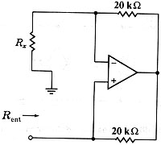

B06 DC analysis: Find input resistance of a net with operational amplifier
Question. Given the following net, find the entry resistance.

Solution:
Clear the symbolic variable.
DelVar rx
Label nodes and elements. Define a variable containing circuit description. I used this description:
"rx,1,0,rx; r1,1,2,20000.; r2,2,3,20000.; o1,3,1,2" àcir
Run the Thevenin/Norton tool:
sq/thevenin(cir,3,0)
When asked, select DC (direct
current) analysis.
Now, find the value you need.
zth
-rx
Answer: The answer obtained is the right one.